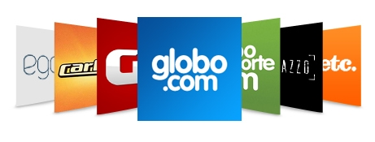

Perfil Pessoal
Idade: 28 anos.
Interesses Pessoais e Profissionais
Formação Acadêmica
2012 - Técnico em Edificações - Instituto Técnico Ataíde - Itaguaí - RJ.
2016 (1ºPeríodo) - Engenharia de Software - Instituto Infent - Rio de Janeiro - RJ.
Listas de sites que costumo acessar
Portal sobre tecnologia que conta com um acervo imenso de vídeos muito interessantes.

Formada em quatro pilares principais, notícias, esportes, entretenimento, tecnologia e vídeos. São eles o G1, GloboEsporte.com,techtudo, Gshow e Globo TV.
Portal semelhante ao Yahoo, onde informa noticias do mundo inteiro, sempre atualizados para você ficar por dentro. A UOL tem noticia para todo tema, seja ele política e esporte.

Site de compartilhamento de vídeos enviados pelos usuários através da internet.
Atividades em curso no Trimestre
| Segunda-Feira | Terça-Feira | Quarta-Feira |
Quinta-Feira | Sexta-Feira |
| Projeto em Desenvolvimento Front-end | Interfaces com HTML, CSS e JavaScript | Interação Humano-Computador para Desenvolvimento Front-end Web | Interfaces com HTML, CSS e JavaScript | Interação Humano-Computador para Desenvolvimento Front-end Web |